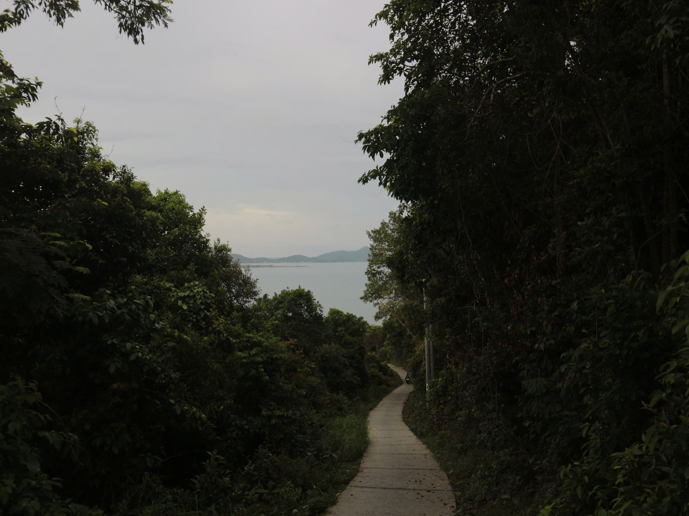
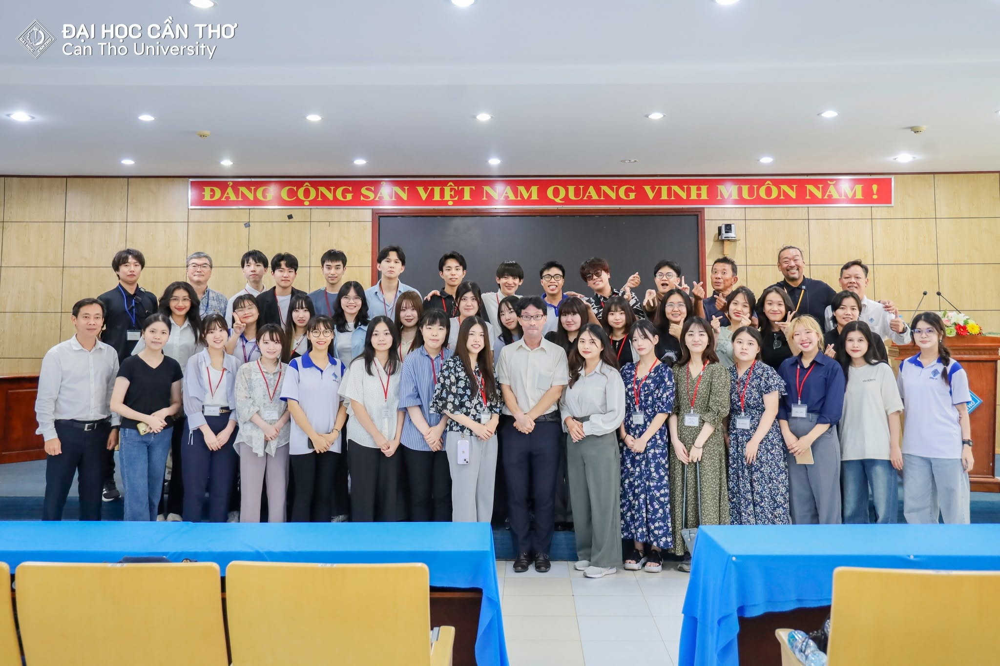
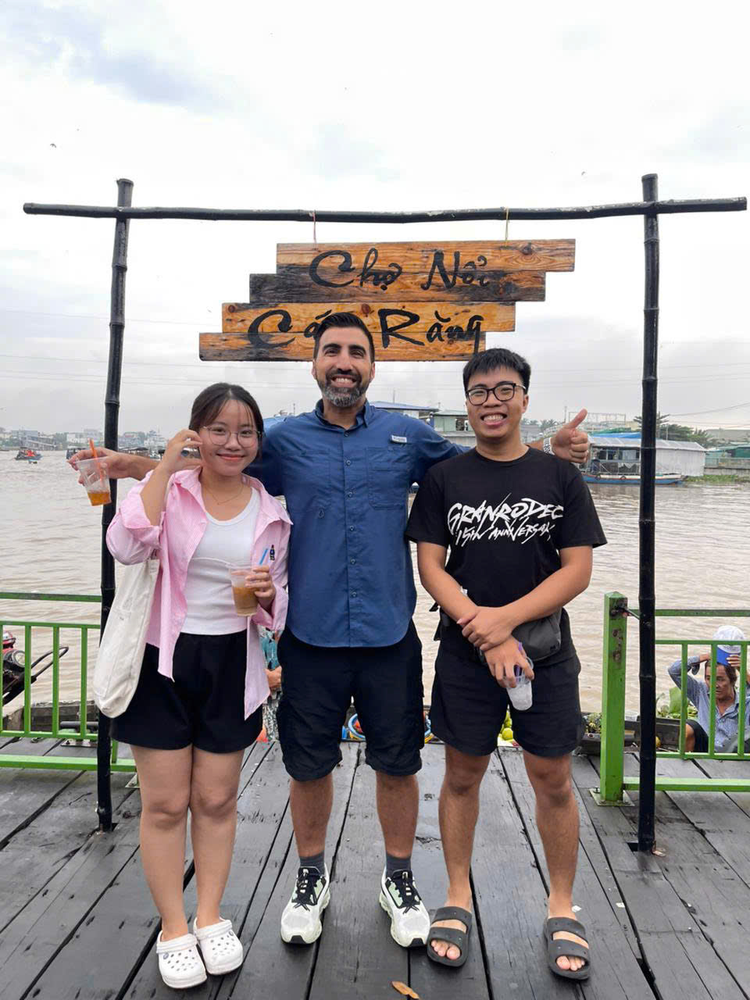
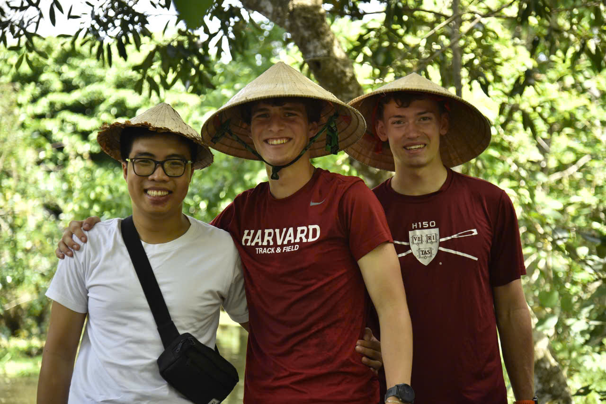
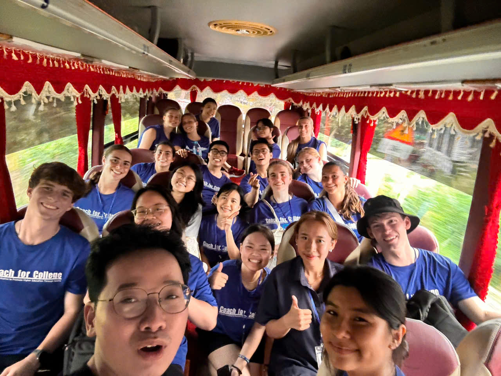
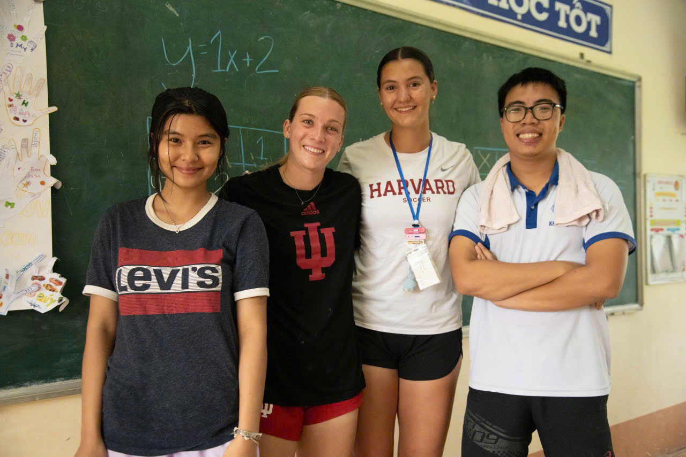

About
Hi, it's Minh again
In a world that is changing quickly, the biggest risk is not taking any risks at all. — Mark Zuckerberg
Who I am
Most people are surprised to learn I majored in English Studies, not computer science. My interest in tech started in 2023 — my brother works as a BA, and watching what he did made me curious enough to teach myself the rest.
What I work with
I work with a range of tools, from open-source to cloud — and I'm comfortable picking up whatever a project or company needs. New tools don't scare me; learning them is half the fun.
Currently
- LocationCan Tho city, Vietnam
- DoingData Engineering intern & BI support at VNPT
- Looking forData engineering / analytics roles — open to fresher or entry-level
- LearningDSA and math-related knowledge
Exploring the world
Outside of data, a lot of my time goes to teaching and volunteering. I've taught math to underprivileged middle-school students, collaborated with Ivy League students on volunteer projects, and done interpreting for my university. Explaining things clearly — to a struggling student or a non-technical stakeholder — is a skill I care about keeping sharp.






Get in touch
The fastest way to reach me is email — I usually reply within a day. Always happy to talk data roles or just nerd out about pipelines.